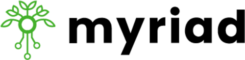
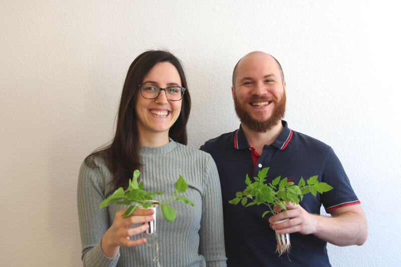
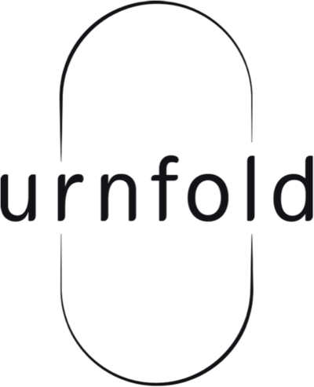
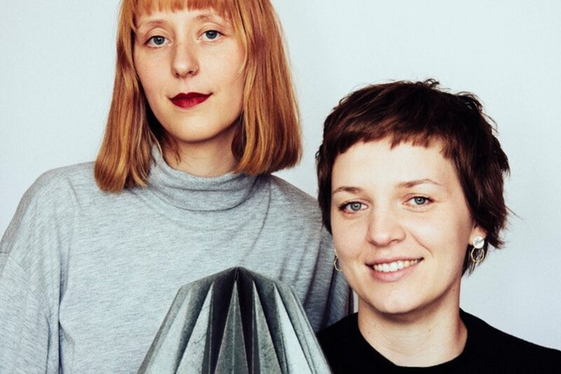
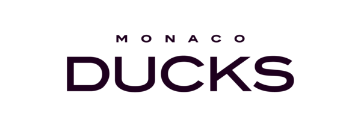
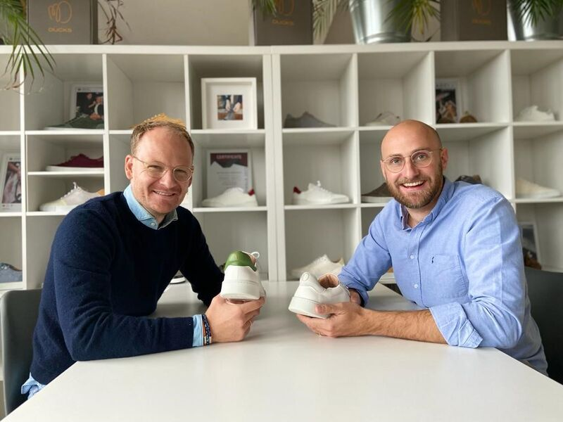

Das LINY One ist das erste Fahrrad, das für eine nachhaltige Kreislaufwirtschaft steht.
Mit LINY wird ein Beitrag zur nachhaltigen Mobilitätswende im urbanen Raum geleistet, denn LINY ist nicht einfach nur ein Fahrrad, sondern ein haltbares und zuverlässiges Fortbewegungsmittel, das im Rahmen einer Kreislaufwirtschaft neu aufbereitet werden kann. Das ist die Mission. Damit soll die Welt ein Stück verändert werden.
Mehr erfahrenLEAF ist die beste Lösung für länger haltbares Obst und Gemüse im Kühlschrank.
Viele Obst- und Gemüsesorten stoßen bei der Reifung Reifegas aus, das die Haltbarkeit der Lebensmittel reduziert. Dieses Reifegas wird dank LEAF im Kühlschrank gebunden, wodurch Obst und Gemüse nicht nur zusammen gelagert werden können, sondern auch länger haltbar sind. Die Vision: Nichts weniger als ein Ende der Lebensmittelverschwendung zu bewirken.
Mehr erfahrenMit Sneakprint kommt der erste maßgefertigte Designer-Sneaker auf den Markt, der mittels 3D-Druckverfahren individualisiert wird.
Mit Sneakprint ziehen endlich passgenaue Sneaker in den Schuhschrank ein, die angenehm zu tragen sind und gleichzeitig auf die individuellen Bedürfnisse der Füße eingehen. Sneakprint nutzt ein Abdruckset (Trittschaum), um detaillierte Informationen über die Füße zu erhalten, die als Grundlage für die Herstellung einer maßgefertigten Einlage dienen. Die individuelle Einlegesohle wird mithilfe fortschrittlicher 3D-Drucktechnik hergestellt. Sneakprint steht nicht nur für hochwertige Materialien, Nachhaltigkeit und Individualität, sondern auch für eine Innovation, die es so auf dem Markt noch nicht gibt.
Mehr erfahren

Mit unseren autonomen Gärten bringen wir die Lebensmittelversorgung direkt zum Konsumenten.
Der Myriad Garten versorgt Pflanzen mit allem, was sie für optimales Wachstum brauchen: Licht, Wasser und Nährstoffe. Dadurch wachsen die Pflanzen doppelt so schnell wie im herkömmlichen Garten. Zum Anbau werden unsere Setzlinge einfach in den Garten eingesteckt, das Wasser muss nur einmal im Monat nachgefüllt werden. So können sich auch unerfahrene Benutzer von Anfang an über eine reiche Ernte freuen, ohne einen Finger zu rühren.
Mehr erfahren

Mit der Herstellung von individualisierbaren Schmuckurnen aus Papier möchte urnfold die ideale Balance aus zeitgenössischem Design und Nachhaltigkeit finden.
Nach dem Tod eines Menschen wird häufig ein standardisierter und eng getakteter Prozess in Gang gesetzt, in welchem wenig Raum für die Bedürfnisse des Individuums bleibt. Werte wie ökologische Nachhaltigkeit und das Streben nach Individualität finden dann keine Beachtung mehr. Gleichzeitig verlieren traditionelle, meist religiöse Rituale rund um den Tod zunehmend an Verständnis und Bedeutung. urnfold ist jedoch der Überzeugung, dass es ergänzend alternativer Rituale bedarf, um Trauer und Tod als Bestandteil des Lebens akzeptieren zu können.
Mehr erfahren

Unsere Vision Make sustainability easy for everyone führt uns zur Mission Build the worlds first circular sneaker brand.
Für unsere Vision haben wir uns für das Produkt entschieden mit dem größtmöglichen Impact: dem Sneaker. Das Lifestyle-Produkt unserer Generation und das am wenigsten nachhaltige Produkt im zweitdreckigsten Markt der Welt – Mode. Um einen kreislauffähigen Sneaker auf den Markt bringen zu können, benötigen wir nicht nur das finale Produkt, sondern auch die Infrastruktur für das Post-Consumer-Recycling. Gemeinsam mit starken Partner:innen aus der Industrie entwickeln wir hier eine Lösung und werden so nicht nur eine Sneaker-Marke, sondern vielmehr Lösungsanbieter und ein Gamechanger für nachhaltige Mode.
Mehr erfahren